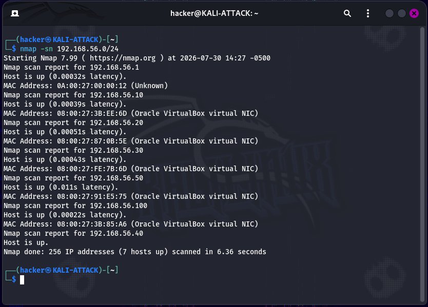
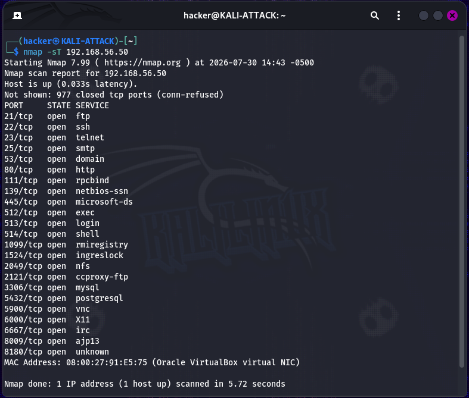
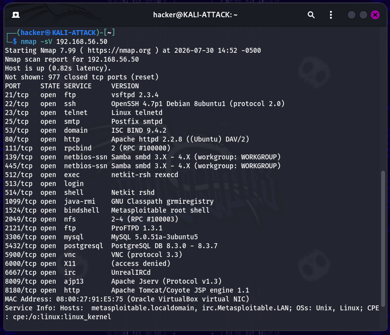
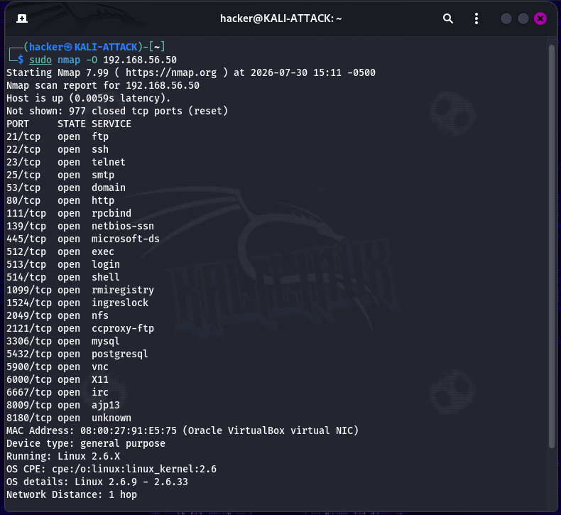
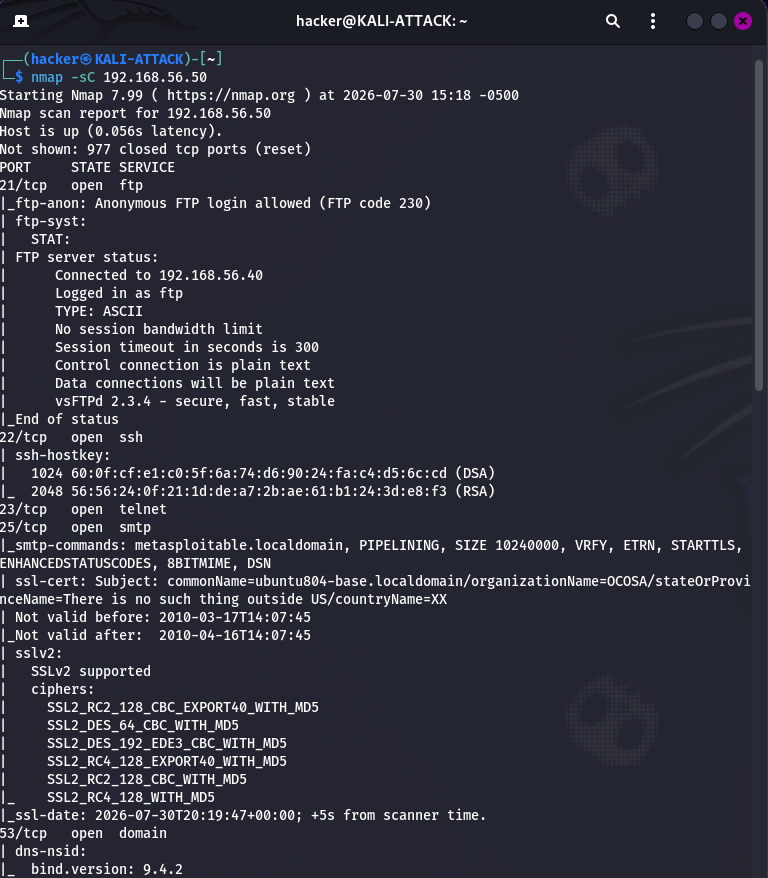
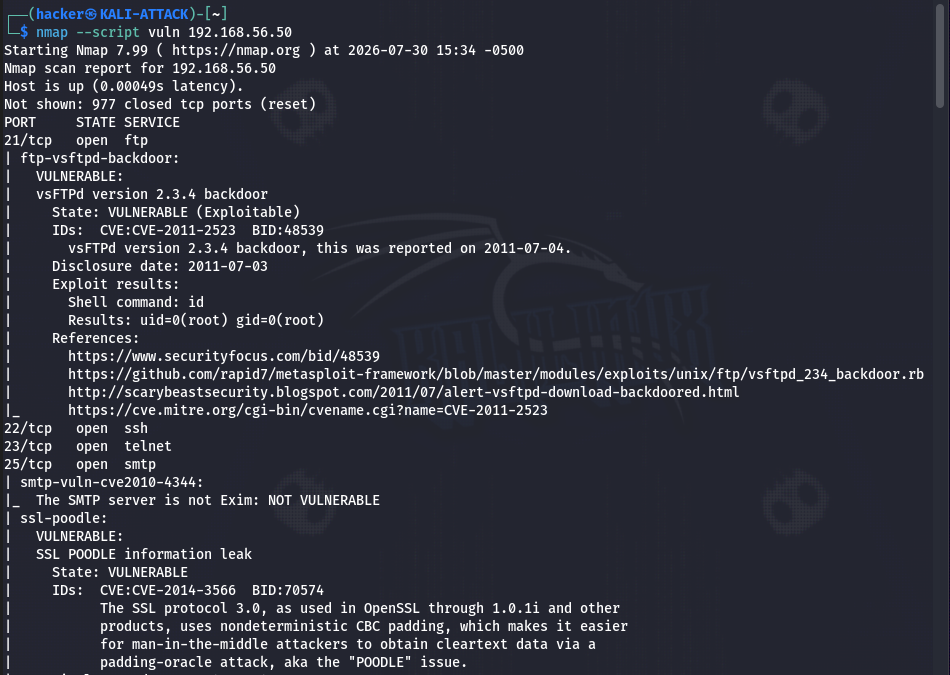

Overview
In this lab, I used Nmap to perform network reconnaissance against the isolated Host-Only network created in Lab 1. The objective was to identify active systems, enumerate exposed services, determine service versions, fingerprint the operating system, and identify potential vulnerabilities.
The activity was limited to reconnaissance and analysis. No services were exploited during this lab. The results establish the information needed for later vulnerability validation and exploitation exercises.
Objectives
Host Discovery
Identify active systems on the isolated lab network.
Port Enumeration
Identify exposed TCP and UDP services.
Service Identification
Determine software and service versions running on the target.
OS Fingerprinting
Identify the target operating system using Nmap fingerprinting.
NSE Enumeration
Use Nmap scripting to gather additional service information.
Vulnerability Discovery
Identify potentially vulnerable services for later validation.
Lab Environment
| Component | Details |
|---|---|
| Virtualization | Oracle VirtualBox |
| Attacker | KALI-ATTACK — 192.168.56.40 |
| Target | METASPLOITABLE2 — 192.168.56.50 |
| Network | 192.168.56.0/24 Host-Only Network |
| Operating System | Kali GNU/Linux 2026.2 |
| Primary Tool | Nmap 7.99 |
Reconnaissance Process
Host Discovery
A ping sweep identified active systems on the isolated Host-Only network.
Port Enumeration
TCP and UDP scans identified exposed network services on the Metasploitable target.
Service Identification
Version detection provided software and service information useful for vulnerability research.
OS Fingerprinting
Nmap OS detection identified the underlying Linux-based operating system.
NSE Enumeration
Default Nmap scripts gathered additional information about exposed services and configurations.
Vulnerability Enumeration
Vulnerability-focused NSE scripts identified documented weaknesses for future investigation.
01 — Host Discovery
The initial Nmap host discovery scan used a ping sweep to identify systems responding on the isolated network.

Nmap host discovery results across the 192.168.56.0/24 network.
Five Lab Systems
The expected virtual machines were visible from the attacker system.
VirtualBox Infrastructure
The Host-Only adapter appeared at 192.168.56.1.
Unexpected .100 Address
An additional address was investigated and determined to be associated with the disabled VirtualBox DHCP service, rather than an unexpected lab host.
02 — Port & Service Enumeration
TCP and UDP scans were used to identify the network attack surface exposed by Metasploitable2.

TCP Connect scan identifying exposed TCP ports.
23 TCP Ports
The TCP scan identified 23 exposed ports on the intentionally vulnerable target.
Legacy Services
Exposed services included FTP, Telnet, HTTP, SMB, databases, IRC, and Tomcat.
UDP Services
The top-20 UDP scan identified services including DNS and NetBIOS-related ports.
03 — Service Version Detection
Nmap service version detection was used to determine the software and versions associated with the exposed services.

Nmap service and version detection against Metasploitable2.
| Service | Detected Version |
|---|---|
| FTP | vsFTPd 2.3.4 |
| HTTP | Apache 2.2.8 |
| SMB | Samba 3.x |
| IRC | UnrealIRCd |
| Tomcat | Apache Tomcat 5.5 |
| MySQL | MySQL 5.0 |
| PostgreSQL | PostgreSQL 8.3 |
These versions provide useful intelligence for vulnerability research because several are historically associated with publicly documented security weaknesses.
04 — Operating System Detection
Nmap OS fingerprinting was used to identify the operating system running on the target.

Nmap OS fingerprinting identified the target as a Linux 2.6-based system.
Linux-Based Target
Nmap identified the target as a Linux 2.6-based system, consistent with Metasploitable 2.
Reconnaissance Value
OS information helps narrow the technologies and vulnerabilities that should be investigated during later testing.
05 — Nmap Scripting Engine
Default NSE scripts were used to gather additional information about the services discovered during enumeration.

Representative output from the default NSE scan.
Anonymous FTP
NSE identified anonymous FTP access on the target.
Web Services
HTTP and Tomcat services provided additional service metadata and web information.
Samba
NSE gathered additional information about the exposed SMB/Samba service.
Database Information
Database services exposed additional version and service information during enumeration.
06 — Vulnerability Enumeration
Nmap's vulnerability-focused NSE scripts were used to identify potentially vulnerable services and configurations.

Representative vulnerability enumeration results.
vsFTPd 2.3.4
Nmap identified the historically documented CVE-2011-2523 backdoor associated with vsFTPd 2.3.4.
UnrealIRCd
The scan identified a documented UnrealIRCd backdoor vulnerability.
SSL/TLS Weaknesses
Findings included POODLE, Logjam, weak Diffie-Hellman parameters, and CCS Injection indicators.
Web Weaknesses
Additional findings included Slowloris exposure and HTTP TRACE being enabled.
Reconnaissance Only
Vulnerability scan results were treated as reconnaissance findings rather than proof of successful exploitation. Exploitability will be validated separately during later security testing exercises.
Results
Network Visibility
Identified active systems across the isolated lab network.
Attack Surface
Enumerated 23 TCP ports and multiple UDP services on the intentionally vulnerable target.
Service Intelligence
Identified software versions across FTP, HTTP, SMB, IRC, Tomcat, MySQL, and PostgreSQL services.
Vulnerability Intelligence
Identified multiple documented vulnerabilities and weaknesses for future validation.
Lessons Learned
- Network enumeration should precede exploitation so that testing is based on observed attack surface rather than assumptions.
- Different Nmap scan techniques provide different visibility, speed, and connection behavior.
- Service version detection significantly increases the usefulness of reconnaissance results.
- NSE scripts can provide considerably more context than basic port enumeration.
- Vulnerability scanner output should be treated as an investigation lead and validated before concluding that a vulnerability is exploitable.
MITRE ATT&CK Mapping
| Technique | ID | Application |
|---|---|---|
| Active Scanning | T1595 | Nmap was used to actively identify systems, ports, and services. |
| Network Service Scanning | T1046 | Network services were enumerated on the Metasploitable target. |
Technical Documentation
The complete technical documentation contains the full command sequence, detailed scan results, additional screenshots, troubleshooting notes, analysis, and evidence.
View Full Lab 02 Documentation on GitHub